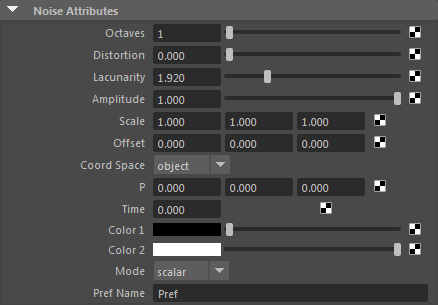

噪波
| 延伸阅读 |
| 有关完整的着色器文档，请参见《Arnold 用户手册》中的噪波。 |

这是一个对相干噪波函数（可能会对若干倍频程进行汇总，从而提供分形噪波，有时也称为湍流函数）求值的着色器。输出介于 0 到 1 之间（实际上是 [0,1)），可用作若干其他着色器节点的输入来生成各种效果。可用于创建许多真实图案，例如大理石、花岗岩、皮革等。
注意：
有关不同噪波图案的教程，请单击此处。该着色器将输出一个浮点值，因此将其连接至 gobo 过滤器等需要颜色值的项目时，它的输出可能不可预测。解决方法是使用 float_to_rgb 着色器，根据噪波纹理的输出构建一个 RGB 颜色。